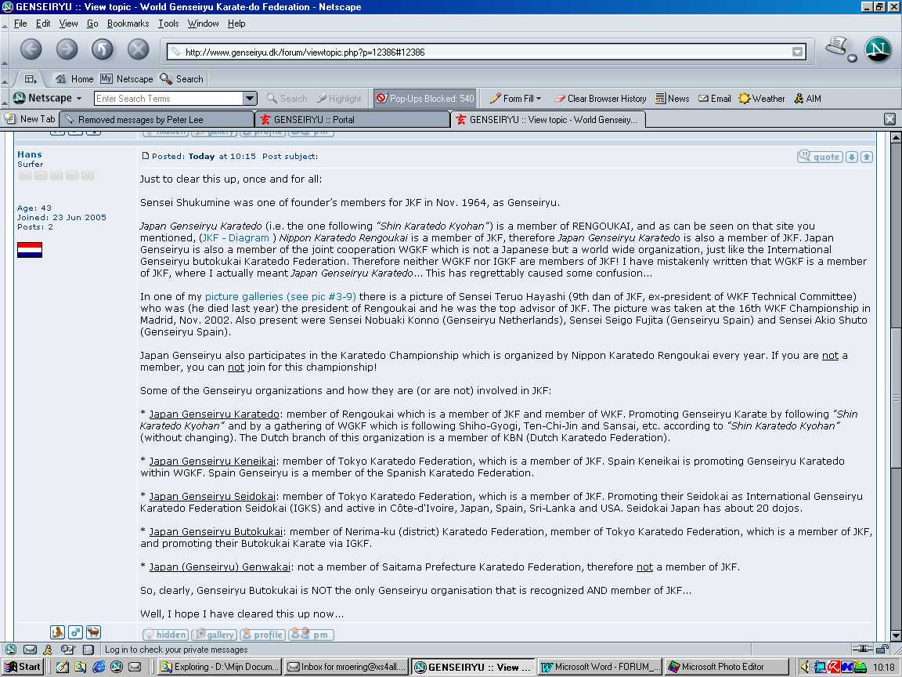
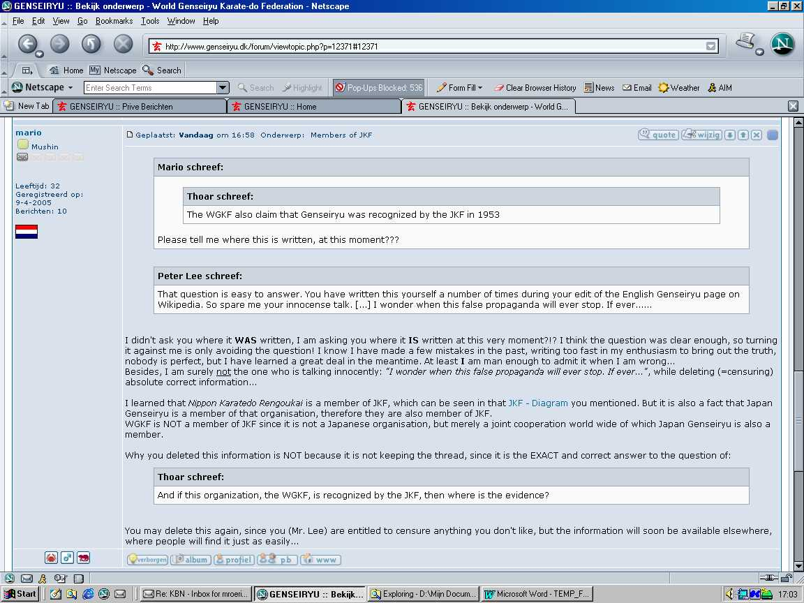
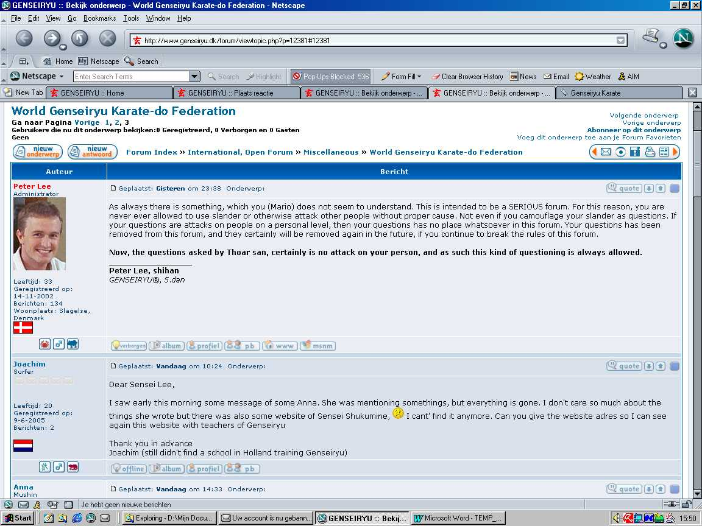
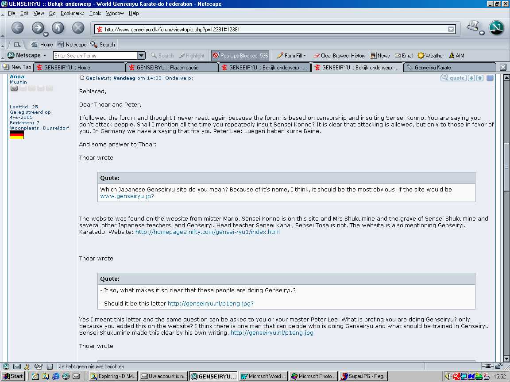
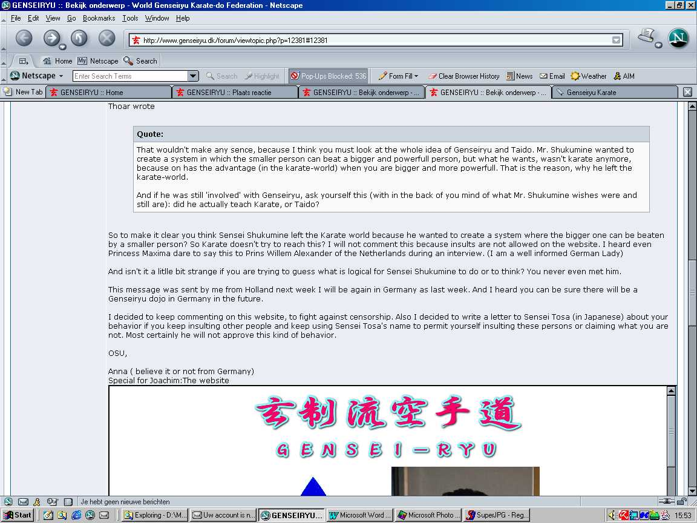
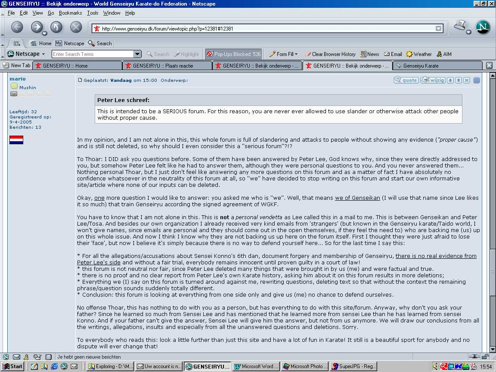
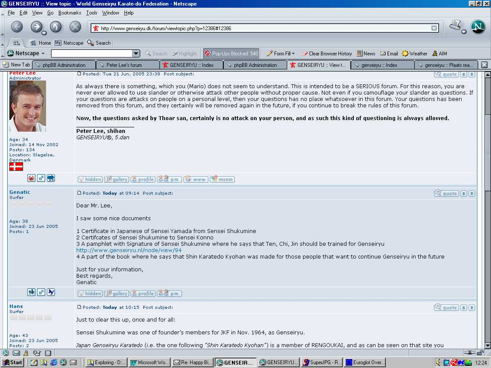
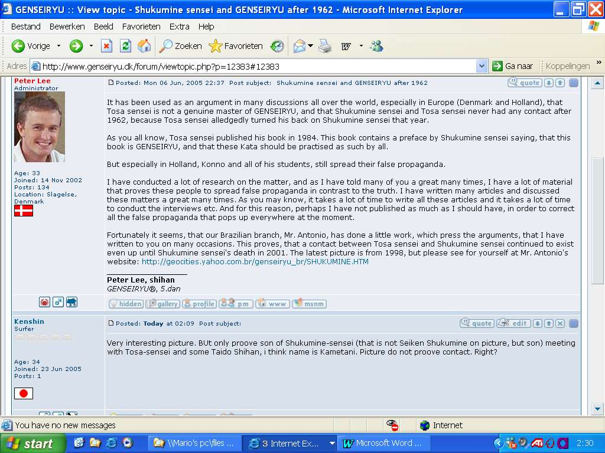
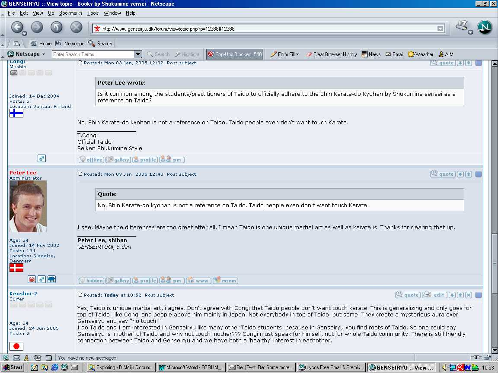

(Best viewed in a resolution of 1152 x 864 pixels or more)
As you may have read in the topic REMOVED! - The game, you are not 'allowed' to ask certain questions to Peter Larsen. Also you are not allowed to meddle in his discussions when you don't agree with him. You are only allowed to talk with him, when you are on the same line.. Telling him that he is wrong (even indirectly) is totally out of line and you might even be banned from the forum, as he has done with many people in the past (including me).
There are many questions that you are not 'supposed' to ask Peter Larsen... Peter Larsen calls these questions "camouflage of slander" (see here). Of course it is not the question that is slander, it's the ANSWER!!!Now here is a collection of some messages that I saved by a photo-copy (Print Screen and then a paste in MS Photo Editor). Do you need any more proof that:
- his forum is NOT neutral;
- he (Peter Lee) is NOT being honest;
- the forum is ONE-sided;
- Peter Lee is NOT brave, since it is impossible to defend yourself when all your messages are simply deleted.
By the way, a written comment from OUR side to these deleted messages can be found here on the Genseiryu Forum, where Peter Lee is NOT able to remove it... Therefore I will post these screencopies without any further comment, apart from some short notes/explanations for better comprehension...
Topic (1): World Genseiryu Karate-Do Federation
(Picture WGKF-1)

(Picture WGKF-2)

(Picture WGKF- 3)

(Picture WGKF-4)

(Picture WGKF-5)

(Picture WGKF-6)

(Picture WGKF-7)

The last message here (by Hans) was already posted at the top of this page.Therefore it's not posted again...
Now almost all these messages are gone!!! Only two messages are left on the forum, BOTH from Peter Lee (naturally): in the first one he is talking about Genseiryu Spain doing the Heian katas from Shotokan and still claim to be doing Genseiryu and not Genseiryu Butokukai (which is pretty logical, since they still train Ten-Chi-Jin according the book of Sensei Shukumine "Shin Karatedo Kyohan", as long as you follow the principles of this book, you can train whatever kata you want as additional!). Try to mention this on the forum and it will be... yes... DELETED!!!
In the second one he is talking about the WGKF, "being recognized by the JKF". To this he then says literally: "I see no evidence anywhere, but still the WGKF claim this". So he first admits he sees absolutely NO evidence, then he says the WGKF still claims this... Now how more can you contradict yourself than this???????
Topic (2): Contact between Shukumine sensei and Tosa sensei
(actually this is REALLY about a picture that is supposed to prove contact
between Tosa and Sensei Shukumine after 1998)
(Picture Shukumine-1)

What can I say more to this? Well, what Kenshin writes here is actually already said by Peter Lee himself! About the pictures we have on our site that should prove for once and for all that sensei Shukumine was still involved in Genseiryu after 1962, Peter Lee himself wrote that these pictures (especially picture #1-5) don't prove any contact between the shown teachers (like sensei Kanai and sensei Konno) but only proof there was "meeting"... Anyway, whatever you want to believe in this case, Peter Lee is surely totally contradicting himself on his own forum!
Topic (3): Books by Shukumine sensei (actually, in this case it's about Taido)
(Picture Taido-1)

To this last message I must add this: Mr. Congi is a well-respected man who gains not only a lot of respect in Taido but also in Genseiryu. I (we) just don't agree with him in this case where he literally says "Taido people even don't want touch Karate". This is maybe true for some Taido people, but surely not for all of them! As a matter of fact, the last celebration of 40 years of Taido was celebrated together with Genseiryu people celebrating 55 years of Genseiryu. This very nice celebration was held in Tokyo, January 2005. Genseiryu Netherlands (under leading of sensei Nobuaki Konno) was also invited to this happening. Pictures can be found on this Genseiryu Karate site. On that same site, there is also a message on the guestbook from Hideo Fujimaru, President of World Taido Federation, calling the site a "great site"! Why would he write that if "Taido people even don't want touch Karate"??? Besides, regarding this sentence, what is Mr. Congi doing (as a member) in a Genseiryu forum??? Absolutely nothing against Mr. Congi, but just to show that Taido people (even Mr. Congi) do have a healthy interest in Genseiryu, after all the mother of Taido!
<HOME>